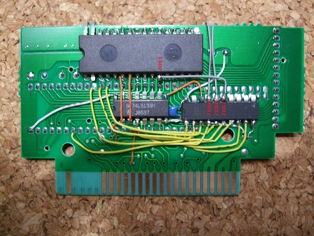
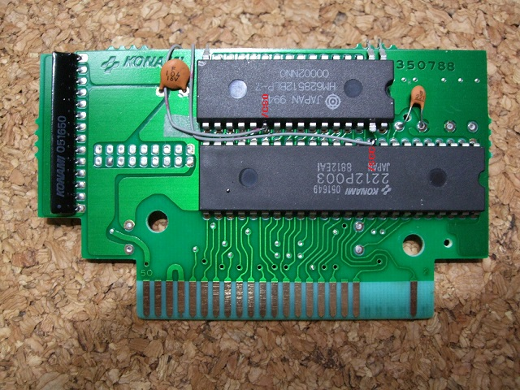

11．GAL16V8Dの配線(2/2)
GAL16V8Dの残りの出力部分の配線をしてしまいます。


15ピン(/CS1)は裏面（同じ面）の628512の22ピンと接続します。
16ピン(/CS0)は表面の628512の22ピンと接続します。
17ピン(/SCC)は2212P002の10ピン(/SCC=/SLTSL)と接続します。基板上の10ピン部分では無く、2212P002の10ピンに直接接続します。
次へ
 次へ
次へ